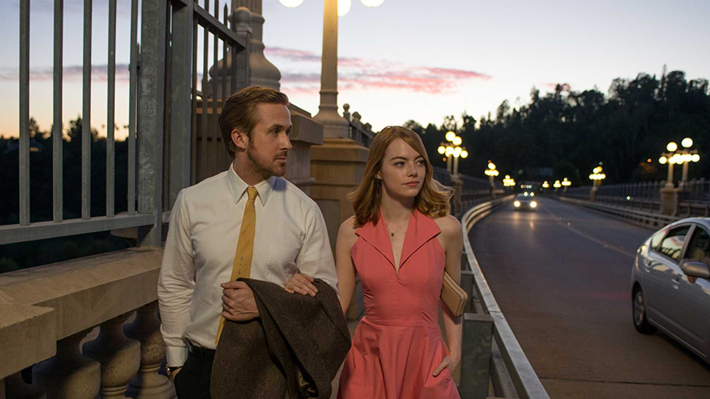
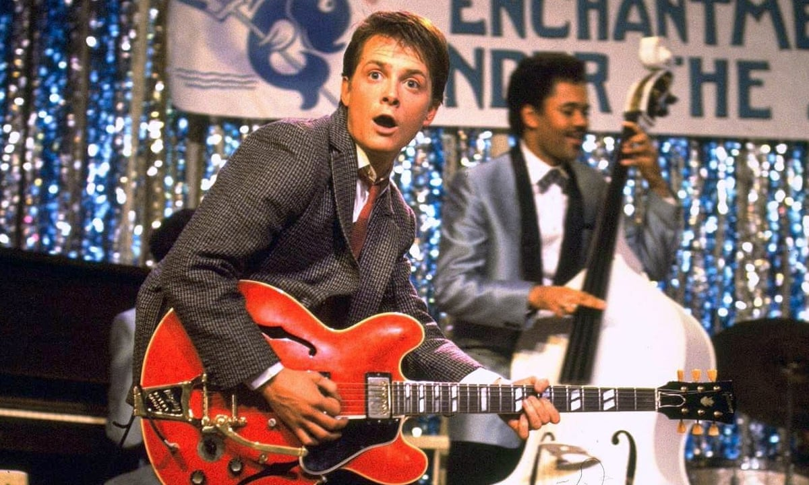

Here are some of my favourites movies:
Dreaming. It is the world that describes best this movie to me. From the incredible soundtrack to the colors used in the scenes, everything in this movie makes me dreaming. It makes you fall in love with the City of Stars with a touching love story beautifully played by Emma Stone and Ryan Gosling.
This movie undeniably makes me happy, everytime I see it. Not only Ewan McGregor plays amazingly, but the color scheme, the fantastical visual of Tim Burton, the characters stories, and music are extremely powerful.

Through different generations, this saga never fades. I love the story of travelling back in time, and Robert Zemeckis' imagination. Power of Love and Johnny B.Goode are still ones of my favorites songs, and I wish I could get an hoverboard someday !
A new sport that I discovered In New York City in 2017, that comes with a lot of benefits for the body and the mental health. A real energy boost that reduces stress, improves coordination and gives a better posture while burning some calories ! I like to punch some bags two or three times a month to work on my cardio routine.
When travelling in Central America, I took a surf lesson in Nicaragua with my friends. I learned how to stand on the surfboard and enjoy the swell. Then, during the rest of our trip, we used to rent surfboards and have fun on some beaches of the Pacific coast in Costa Rica.
From age 5 to 15, I used to play tennis in a club regularly. This learning experience provided me with a good level, and I usually enjoy spending time playing tennis with some friends on week-ends.
Skiing is one of my favorite sport! It gives me a real feeling of freedom, and enables me to breathe fresh air and enjoy moutains views.
I am passionate about new technologies and how they can change the way we live and work. VR can already help architects to create buildings, medical students to learn surgery, or even trainees to learn new skills on a new job. I’m excited to see where the technology will go in the future and how it will define the intelligent workplace.
I have always enjoyed learning a new language, by watching movies in original version, or listenning to music and learning the lyrics. My experiences abroad enabled me to develop really quickly my english, spanish, and italian. I a now learning portuguese with DuoLingo in order to practice it with some brazilian and portuguese friends.
Interested in the business area, I have naturally chosen to study in a business school in order to master some skills in Marketing, Finance, Negotiation, Supply Chain, and Economics, and to become a team leader. I particularly like to know how a company works and runs its business, coordinating all the teams, and teamwork.